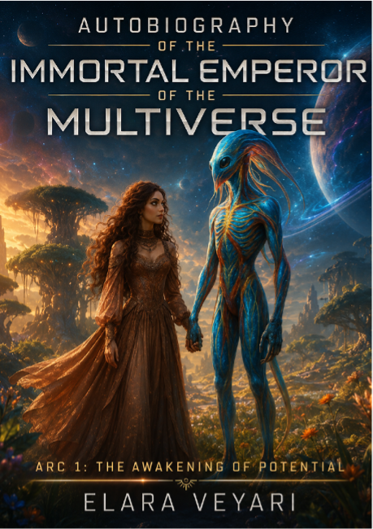
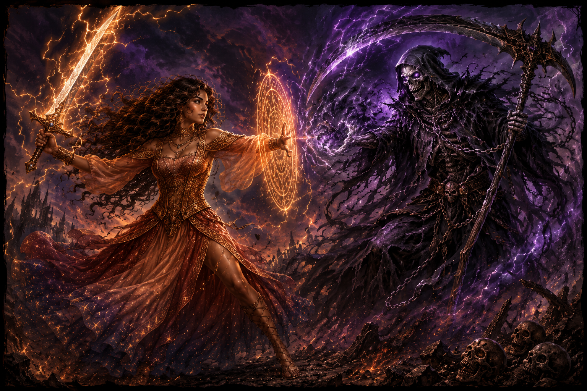

Adventures on Sorathia
Field notes from a living planet: Veyari chromatic language, Myrmin politics, Zyythra mysteries, and the early systems that shaped Elara.
WorldbuildingOrigin storiesAlien societies
Enter Sorathia
Humanity has reached the useful kind of crisis: terrifying, avoidable, and full of data. Elara has crossed the Bulk to offer a memoir, a warning, and a survival blueprint disguised as speculative fiction.

A transmission, made human-readable
Elara is a Veyari from Sorathia, a bioluminescent world where bodies think, color speaks, and social connection can be sensed directly. Her story begins as alien memoir and widens into a philosophy of survival: continued existence, optimal health, and optimal contentedness.
The tone is cosmic, funny, impatient, and oddly intimate. It is a direct address from someone who has seen countless civilizations rise, fall, and rise again (or become extinct), and would prefer humanity not add itself to the archive.
Explore the short fiction
Dip your toes into Elara's existence and that of the broader Multiverse. These story hubs bring forth insight into why civilizations rise to the Multiversal Sentient Network, or fall flat into oblivion.
Field notes from a living planet: Veyari chromatic language, Myrmin politics, Zyythra mysteries, and the early systems that shaped Elara.

Elara's failures. Sometimes, even the great Immortal emperor of the Multiversal fails. At least she learns from her mistakes.
Elara's success stories. Bringing sapient species on the brink of extinction to the right side of the existential asymptote to rise to the Multiversal Sentient Network.
"Every perspective contains value. Some simply require more epistemic gravity before they resemble anything useful."Immortal Emporeror Elara, probably while judging humanity's resource stream efficiency